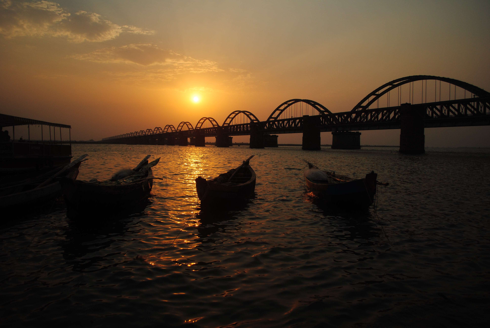
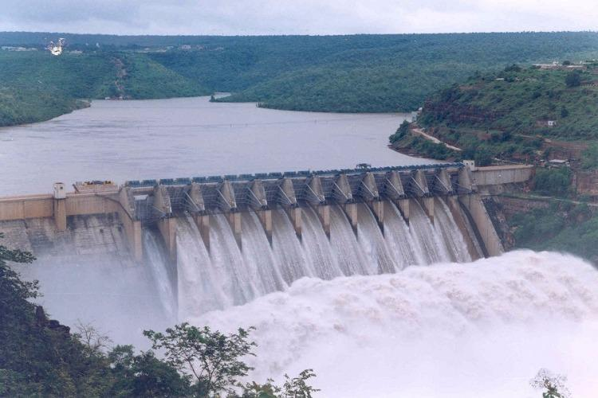

4.Godavari River
The Godavari is India's second longest river after the Ganges river and drains into the third largest basin in India, covering about 10% of India's total geographical area. Its source is in Trimbakeshwar, Nashik, Maharashtra. It flows east for 1,465 kilometres (910 mi), draining the states of Maharashtra (48.6%), Telangana (18.8%), Andhra Pradesh (4.5%), Chhattisgarh (10.9%) and Odisha (5.7%). The river ultimately empties into the Bay of Bengal through an extensive network of tributaries
The river is sacred to Hindus and has several places on its banks, that have been places of pilgrimage for thousands of years. Amongst the huge numbers of people who have bathed in her waters as a rite of cleansing are said to have been the deity Baladeva 5000 years ago and the saint Chaitanya Mahaprabhu 500 years ago

The story of the Godavari river is told from the Kotirudra Samhita of the Shiva Purana. The sage Gautama, is engaged in Tapasya (deep meditation) on the Brahmagiri mountain when there is a hundred-year drought in the area and thus crops can't grow.

The river has been revered in Hindu scriptures for many millennia and continues to harbour
and
nourish a rich cultural heritage. In the past few decades, the river has been barricaded by
several
barrages and dams, keeping a head of water (depth) which lowers evaporation. Its broad river
delta
houses 729 persons/km2 – nearly twice the Indian average population density and has a substantial
risk
of flooding, which in lower parts would be exacerbated if the global sea level were to rise